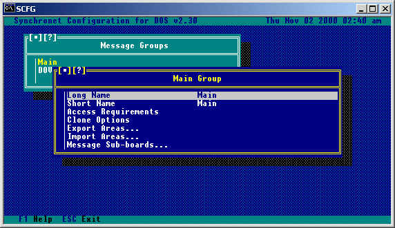
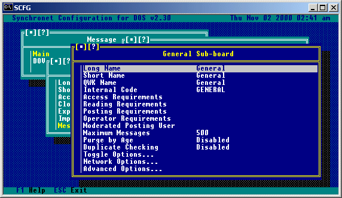
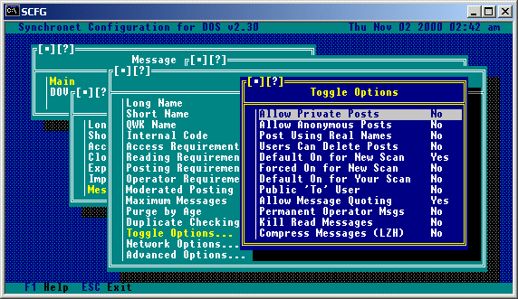
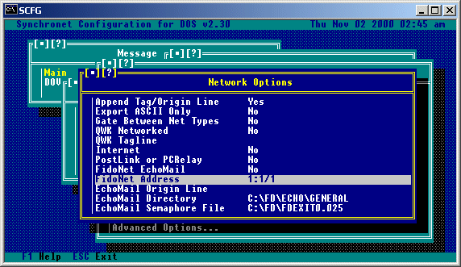

The Synchronet message base is used for storing messages from a user or sysop to other users or a specific user. The messages are divided into sub-boards where each sub-board has a unique message topic. Sub-boards are grouped together into message groups.
Sysops can control which users have what level of access to each group and sub-board. If a user doesn't have access to a specific group or sub-board, the user won't even know the specific group or sub-board exists.
The following is an example group/sub-board configuration:
Group Name Sub-boards
------------------------------------------------------------------------------
Main Sysop Notices
General Discussion
Debate
Entertainment
Advertisements
Adult General Discussion
Entertainment
Singles Only
Technical Hardware Help
Software Help
Programming
The Synchronet configuration program (SCFG) is used for adding, deleting, and configuring message groups and sub-boards.
Synchronet has a separate private personal mailbox for each user on the system. Users may receive local E-mail, NetMail, and Attached Files in their mailbox. Upon logon, each user is asked if they wish to read any mail in their box. Mail will stay in the user's box until it is deleted. Mail in a user's box may only be viewed or deleted by the receiving user, the sending user, or a sysop. E-mail is preferred over Private Posts (on a sub-board) for sending private messages to users on the same BBS. Private posts are only useful for sending private messages on message networks that do not support or allow NetMail. An E-mail file attachment may be uploaded by a user if SCFG->System->Message Options->Allow Uploads in E-mail is set to Yes. When reading E-mail with a file attached, the receiving user will be prompted if he or she wishes to download the attached file at that time. If the user downloads the file, the file is deleted. If the message is deleted without the file being downloaded, the file is deleted as well. Users with the 'A' exemption may send Anonymous E-mail if SCFG->System->Message Options->Allow Anonymous E-mail is set to Yes. When replying to another message in E-mail, the original message may be quoted if the SCFG->System->Message Options->Allow Quoting in E-mail is set to Yes.
Set-up: 1. Set SCFG->Networks->Internet->Address to your system's Internet address (domain name or static IP).
2. Set SCFG->Networks->Internet->Allow Sending of Netmail to "Yes".
3. Set SCFG->Networks->Internet->Allow File Attachments to "No" (File attachments from the BBS are not supported at this time).
4. Set SCFG->Networks->Internet->Send NetMail using Alias however you wish (Users can receive e-mail to their Alias OR real-name regardless of this setting).
5. Set SBBSCTRL->Mail Server->Configure->DNS Server to the address of your ISP's DNS server OR set Relay Server to the address of your ISP's SMTP server.
Notes:
Users will be able to send Internet e-mail from your BBS now (if you have a customized TEXT.DAT make sure you have updated line 62, "InternetMailing").
Your users will be able to receive e-mail at your BBS using any of the following ways:
First.Last@your.bbs.domain Example: digital.man@vert.sync3.net RealFirst.Last@your.bbs.domain Example: rob.swindell@vert.sync3.net UserNumber@your.bbs.domain Example: 1@vert.sync3.net "First Last"@your.bbs.domain Example: "digital man"@vert.sync3.net "RealFirst Last"@you.bbs.domain Example: "rob swindell"@vert.sync3.net
E-mail user names are not case sensitive (e.g. Digital.Man and digital.man are both valid user names). In order for users to receive mail via usernumber, that option must be checked in SBBSCTRL->Mail->Configure.
E-mail sent to "SYSOP", "POSTMASTER", your BBS's QWKID, or the sysop name (as configured in SCFG) will automatically go to user #1 on the BBS.
Additional aliases can be configured by creating the text file CTRL\ALIAS.CFG with the following syntax:
-------------------------------[ Begin ]--------------------------------------
; This is a comment ; ; Alias User Name or number
root sysop sysadmin sysop webmaster sysop great.drummer Rob Swindell
--------------------------------[ End ]---------------------------------------
If a user has their account configured to forward their e-mail to an Internet address and they receive an Internet e-mail, it will automatically be forwarded to the configured address.
The sysop of QWKnet nodes can receive e-mail at their QWK-ID @ their hub's Internet domain/ip address. Example: If YOURBBS (QWK-ID) polls VERT for QWKnet, you (the sysop) can receive e-mail at yourbbs@vert.sync3.net.
You (or any of the user's on YOURBBS) can send Internet e-mail from YOURBBS through VERT by sending a QWKnet NetMail message to NETMAIL@VERT with the actual destination Internet address as the first line of the message.
Relaying: As of v1.10, the Synchronet Mail Server can be used to relay e-mail to external servers. Due to the security (SPAM) risks of opening the SMTP server up to just anyone, you must specify which hostnames or IP addresses you wish to allow to relay mail. You do this by creating the file TEXT\RELAY.CAN and list the IP addresses or host names of the systems you wish to give relay access to. If you wish to allow relay access to all hosts (not recommended), simply create a RELAY.CAN with one line containing ".~".
Hit 'C' from the wait for call screen and select "Message Base" from the SCFG main menu and add any additional message groups you want. A message group is a group of message sub-boards that have a similar subject matter or other common element. It is common to put all of your local sub-boards in one group and your networked sub-boards (where messages are shared with other BBSs) into other groups. An example configuration that separates local and networked sub-boards into groups: Group Sub-boards ~~~~~~~~~~~~~~~~~~~~~~~~~~~~~~~~~~ Local General Local Sports Local Debate Local Literature Local Technology Local Advertisements DOVE-Net General DOVE-Net Advertisements DOVE-Net Entertainment DOVE-Net Debate DOVE-Net Hardware/Software DOVE-Net Programming DOVE-Net Synchronet DOVE-Net Synchronet Sysops FidoNet Interuser Discussion FidoNet Politics FidoNet Unix FidoNet OS/2 FidoNet DESQview Another use of message groups is to group sub-boards of similar topic together: Group Sub-board ~~~~~~~~~~~~~~~~~~~~~~~~~~~~~~~~~ Main Sysop Messages Main General Main Debate Main Entertainment Main BBS Ads and ANSI Technical Software Help Technical Hardware Help Technical Programming Adult General Adult Singles Only Adult Dear Abby Adult Jokes Adult Financial And you certainly can mix the two examples of message group utilization given above or invent your own. Or, you can just have one message group for all of your sub-boards - forgoing the organizational advantages of using multiple groups. To add message groups, select the position you want the new message group to be in with the arrow keys. If you want the new message group to be the first group, highlight the top line. If you want the message group to be added to the end of the group list, highlight the bottom line. Hit INS (insert key) to add a new message group, or DEL (delete key) to remove an existing one. Following is a list of options available when creating or modifying a message group.

Long Name:
This is a description of the message group which is displayed in
message group listings.
Short Name:
This is a description of the message group which is used for prompts.
Access Requirements:
Use this option to set specific user requirements for access this
message group.
Clone Options:
Use this option to "copy" the options from the first message sub-board
in this group to all other existing sub-boards in this group.
Export Areas:
If you wish to export the area information of all the sub-boards in
the current message group to a text file, use this option.
Import Areas:
If you wish to import message area information from a text file, use
this option.
Message Sub-boards...:
Select this option to get a list of, and be able to edit, the sub-
boards within this group.
To create sub-boards, hit enter on the message group you want to add the sub-boards to, then select "Message Sub-boards". Adding sub-boards is very similar to adding groups except you will be prompted for an internal code. The internal code should be a short description (name abbreviation) for the sub-board. To configure the particulars for the sub-board, select it by hitting enter on it from the sub-board list. Following is a list of options available when creating or modifying a message sub-board.

Long Name:
This is a description of the sub-board which is displayed in
sub-board listings.
Short Name:
This is a description of the sub-board which is used for prompts.
QWK Name:
This is the name of the sub-board used for QWK off-line readers.
Internal Code:
This is an internal code for SBBS to distinguish this sub-board from
the others on the system. This should be a unique name of up to 8 valid
DOS filename characters.
Access Requirements:
These are the requirements that a user must meet to be able to access
this sub-board.
Reading Requirements:
Use this option to set the security requirements to read messages on
this sub-board.
Posting Requirements:
Use this option to set the security requirements to post on this
sub-board.
Operator Requirements:
Use this option to set the security requirement to be a sub-op on this
sub-board (note: sub-op is a sysop of a sub-board).
Moderated Posting User:
Users meeting the criteria set here will have their posts "moderated"
when posting on this sub-board. Moderated messages cannot be read by
users or exported until validated by a sub-op or sysop.
Maximum Number of Messages:
This is the maximum number of messages that will be allowed on the
sub-board. This number is used by SMBUTIL to maintain the message base
and remove the oldest messages when this limit is exceeded.
Purge by Age:
This is the maximum length of time (in days) that old messages will
be kept in a sub-board.
Duplicate Checking:
Use this option for duplicate message checking (comparing a new
message against those previously imported to detect a duplicate message
created by program or user error). Enabling duplicate message checking
requires you specify a maximum number of CRCs. This is the number of
previously imported messages to keep track of (using CRC calculation).
This number, if used, should be set to about one weeks worth of
messages. Large numbers in this field will slow down message importing.

Allow Private Posts:
If you want to allow users to post private messages to another user
on the sub-board, set this option to Yes. Since Synchronet has an
internal e-mail system, this option is usually only set to Yes on
networked sub-boards that allow private posts. You can also force
private posts on this sub-board by setting this option to Only.
Allow Anonymous Posts:
If you want to allow users that have the 'A' exemption to be able to
post anonymously on this sub-board, set this option to Yes. You may
also force anonymous posts by any one (with or without the 'A'
exemption) by setting this option to Only.
Post Using Real Names:
If you wish posts on this sub-board to be posted using the real name
of a user instead of his/her alias, set this option to Yes. Many
networks require BBSs that allow aliases to force real names on
networked sub-boards.
Users Can Delete Posts:
You may allow users to delete their posted messages by setting this
value to Yes. You may allows users to delete their messages only if
it is the last message on the sub-board by setting this value to
Last.
Default On for New Scan:
If this option is set to Yes, this sub-board will default to 'On'
when a user does a new message scan on this sub-board for the first
time.
Forced New Scan:
If this option is set to Yes, the sub-board will not be skipped in
new message scans even if the user has configured his or her new scan
to not contain this sub-board.
Default On for Your Scan:
If this option is set to Yes, this sub-board will default to 'On'
when a user does a new message scan for personal messages on this
sub-board for the first time.
Public 'To' User:
If you wish all posts to be prompted for a 'To' user, set this option
to Yes. Many networks do not allow private messages on networked
sub-boards, so the only way to send a message 'To' someone is to send
it publicly with a 'To' field. Normally, 'To' users are only prompted
for on private posts.
Allow Message Quoting:
If you wish for users to be able to quote from other messages on this
sub-board, set this option to Yes.
Permanent Operator Msgs:
Setting this option to Yes will cause messages posted by the Sysop (or
sub-op) to be marked as permanent (will not be deleted by normal
maintenance).
Kill Read Messages:
If you wish for messages to be deleted after the recipient has read the
message, set this option to Yes. To delete only those messages marked
as private after they've been read, set this option to Private.
Compress Messages (LZH):
When this option is set to 'Yes', the BBS will utilize the LZH
compression method when storing messages. This will cause message
importing to be slower, but can conserve disk space (30% to 50%) which
can mean tens or even hundreds of megabytes of extra space on BBSs with
large message bases.

Append Tag/Origin Line:
If you want a tagline (QWK network) or origin line (FidoNet) to be
appended to messages sent out on the network from this sub-board,
set this option to Yes.
Export ASCII Only:
Set this option to Yes if this sub-board should only be exporting
ASCII characters to message networks.
Gate Between Net Types:
If this sub-board is simultaneously networked with multiple networks
using different network technologies, and you want messages imported
from one network to be exported to the other network(s), you must set
this option to 'Yes'. Gating messages between networks usually requires
specific authorization from the moderator of each network. Do not set
this option to 'Yes' unless you are absolutely sure you understand the
consequences.
QWK Networked:
Setting this option to Yes will limit posted message titles to the
QWK packet limitation of 25 characters and allow QWK network accounts
to upload and download messages to/from this sub-board.
QWK Tagline:
This is an optional tagline that will be used for this sub-board. If
this field is blank, the default tagline will be used. If "Append
Tag/Origin Line" is set to No, then no tagline will be used.
Internet:
If this sub-board is networked via the internet, this toggle option
should be set to 'Yes'.
PostLink or PCRelay:
If this sub-board is networked via PostLink or PCRelay, set this option
to Yes.
FidoNet EchoMail:
If this sub-board is networked via FidoNet, set this option to Yes.
FidoNet Address:
This is the FidoNet address used for this sub-board.
EchoMail Origin Line:
This is an optional origin line that will be used for this sub-board.
Do not include the FidoNet address in this line. Synchronet
automatically adds the " * Origin: " and "(Zone:Net/Node.Point)".
If this field is blank, the default origin line will be used. If
"Append Tag/Origin Line" is set to No, then no origin line will be
used.
EchoMail Directory:
This is the storage directory where FidoNet style (FTS-0001 stored
message format) messages are imported from and exported to for this
sub-board (using SBBSFIDO a defunct method of importing/exporting
FidoNet echomail). If this option is blank, then the EchoMail base
directory is used with the internal code of this sub-board as the
sub-directory where the FidoNet messages are stored.
EchoMail Semaphore File:
This is the path and filename of a file that should be created to
trigger your front-end mailer to export FidoNet EchoMail.
QWK Conference Number: This option allows you to use a Dynamic (automatic) or Static (hard-coded) numbering for the QWK conference number of each sub-board. Dynamic numbering gives "as is" conference numbers, where sub-board 1 in group 1 would be 1001, and sub-board 1 in group 2 would be 2001, etc. Static numbering allows you to give each conference whatever number you prefer, which is extremely useful because it allows you to add and remove conferences without altering the numbers of other sub-boards. Storage Method: This is the method which will be used for storing messages when a new message is posted on this sub-board. There are three message storage methods. Their advantages and limitations are as follows: Self-packing: Self-packing is the most efficient message storage method because it looks for and uses deleted message blocks for new in-coming messages. Because of this behavior, it is the slowest storage method, but eliminates the need to run "SMBUTIL P" on the message base regularly. It is suggested however, that you do run "SMBUTIL P" on Self-packing message bases that have accumulated a large number of deleted message blocks. This can happen if you lower the maximum number of a messages for a message base and then run "SMBUTIL M" or import a large number of networked messages into this message base, far exceeding the maximum, and then running "SMBUTIL M". Under these circumstances, you will be wasting disk space on deleted message blocks that will not likely be used again unless you reach that number of messages again. An example: A Self-packing sub-board is set to maximum of 500 messages. The sub-board has 500 messages in it taking up approximately 2MB of disk space. A large network message packet is imported containing 200 messages for this sub-board. The sub-board now has 700 message in it taking up approximately 3MB of disk space. "SMBUTIL M" is run and the oldest 200 messages are deleted, bringing the total messages down to 500 again, but still taking up 3MB of disk space. The sub-board will not increase in size (disk consumption) again unless the total number of messages exceeds 700. If this is not likely to happen, then running "SMBUTIL P" on this sub-board will save you approximately 1MB of disk space. Fast Allocation: Fast Allocation storage method is faster than Self-packing because it does not search for deleted message blocks to use for new messages, it always adds to the end of the message base. Because of this behavior, the message base will continually grow in size (consuming disk space) until "SMBUTIL P" is run. Since the idea of using Fast Allocation is speed, it is also a good idea to speed up your "SMBUTIL P" event by specifying a minimum number of packable kilobytes before actually packing a message base. This will cause SMBUTIL to analyze the message base before actually packing it. This is be done by specifying the number of kilobytes on the SMBUTIL command line. If for example, you only want it to pack the message base if it can save 500k or more of disk space, then use "SMBUTIL P500" for a command line. This will keep SMBUTIL from packing the message base every time it is run (which can be time consuming) even if only a small amount of disk space will be saved from the operation. You can switch between fast Fast Allocation and Self-packing storage methods at any time. You can even have one program importing into a message base using Self-packing and another using Fast Allocation and no harm will be done to the message base. Hyper Allocation: Hyper Allocation is much like Fast Allocation, except it is much faster because it does not update the message base allocation files necessary to be downward compatible with the Self-packing storage method. For this reason, you cannot change a message base from Hyper Allocation to Self-packing or Fast Allocation without first deleting all the messages in the message base (SCFG will do this for you). You must also be sure that all programs that write to this message base support the Hyper Allocation storage method (as defined in v1.20 of the SMB specification). If you are using any third party message import programs, do NOT use this storage method unless you are positive the program supports it. Ask the developers if you are not sure. Like Fast Allocation, you must run "SMBUTIL P" on Hyper Allocated message bases regularly. The minimum packable kilobytes analysis feature of SMBUTIL (i.e. "SMBUTIL P500") takes longer with a Hyper Allocated message base but the actual packing operation is much faster. To get the fastest importing/writing speed, disable Duplicate Message checking and LZH compression for the message base. Retrieving messages (exporting/reading them from the message base) is the same speed with all storage methods. LZH compressed message bases will export slower than non-compressed message bases. Storage Directory: Where Synchronet should place the data files for this sub-board. Normally this option should be left BLANK unless it is required that the data be placed on a different drive letter.
If you are upgrading to Synchronet from another BBS package and have your
messages in QWK packet format, you can import them into Synchronet as follows:
1. Create message groups and sub-boards under Synchronet to accept the
messages from your old system.
2. Write down the conference numbers for each of your message areas from
the old system.
3. Rename your exported QWK packet to TEMP.QWK and copy it into your DATA
directory.
4. Add a QWK network hub in SCFG using TEMP for the QWK ID.
5. Add each of your sub-boards to the list of Networked Sub-boards and
enter the conference number from the old system. Select "Strip-out"
for Ctrl-A handling. Set Node 1 for the call-out node.
6. Run SBBS from your NODE1 directory and your messages should be
imported immediately.
7. Run SCFG and delete the TEMP QWK network hub.
When posting a message on a sub-board, users or sysops can specify that the message is NOT to be distributed across a message network (kept local only). This is done by starting the message title with "NE:" which stands for "No Echo" (only useful on networked sub-boards).
Following are examples on how to perform various functions remotely via QWK.
Note that some of these functions are intended only for users who are using QWK
mail doors to retrieve their messages from the BBS, and not for BBSs which are
QWK netted together, these commands are noted as being for users only. Although
intended for users, some of the user commands will work properly on a QWK
netted BBS (e.g. FILES would place the resulting file list into the BBSs
inbound directory), but some will not (e.g. the YOURS function).
In order to invoke the various remote QWK functions via a QWK network, you must
post a message to SBBS on one of the conferences which you are receiving from
your QWK hub. Note that the ADD and RESET functions are conference specific,
meaning that your message MUST be posted on the conference where the function
is to take effect.
NOTE: In the following examples, 'ptr' is a pointer indicating the message
number to start at (e.g. specifying 100 would set the message pointer to
message number 100), '-msgs' sets the message pointer to a number of
messages from the end (e.g. -100 to set the pointer to 100 messages
from the last message), and 'mm/dd/yy' sets the message pointer to the
date specified (e.g. 01/01/90 sets the message pointer to January 1,
1990).
The '|' symbol shown in the options means OR. Function parameters in
square brackets '[]' are optional, parameters in less than/greater than
symbols '<>' are required. Specifying an ON/OFF function without the
ON or OFF parameter will toggle the function OFF.
Examples:
To: SBBS (All messages must be sent to SBBS)
Subj: DROP [conf#]
Note: Drop current conference (or specified conference #) from future packets.
Subj: ADD [YOURS] [ptr | -msgs | mm/dd/yy]
Note: Add current conference to future packets and optionally set the message
pointer.
If "YOURS" is specified, only mail addressed to you will be packed for
this conference.
The YOURS option is for users only.
Subj: YOURS [ptr | -msgs | mm/dd/yy]
Note: Same as "ADD YOURS".
For users only
Subj: RESET [ptr | -msgs | mm/dd/yy]
Note: Set message pointer for current conference.
Subj: SUBPTR [ptr | -msgs | mm/dd/yy]
Note: Same as "RESET".
Subj: RESETALL [ptr | -msgs | mm/dd/yy]
Note: Set message pointers for all conferences.
Subj: ALLPTR [ptr | -msgs | mm/dd/yy]
Note: Same as "RESETALL".
Subj: FREQ <filename>
Note: File Request from file transfer database (not attachments). QWK netted
BBSs will receive the requested file into their hubs IN sub-directory,
normally located in the \SBBS\DATA\QNET directory
Subj: FILES [ON | OFF | mm/dd/yy]
Note: Include files list in packet and/or specify new-scan date.
Specifying files with the date only will turn this option ON.
For users only
Subj: ATTACH [ON | OFF]
Note: Include file attachments in packet automatically (e-mail only).
For users only
Subj: OWN [ON | OFF]
Note: Include messages from you (affects all conferences).
For users only
Subj: MAIL [ALL | ON | OFF]
Note: Include private mail-box (ALL includes previously read mail).
For users only
Subj: DELMAIL [ON | OFF]
Note: Automatically delete mail-box after successful packet download.
For users only
Subj: CTRL-A [KEEP | EXPAND | STRIP]
Note: Ctrl-A color/attribute codes - leave-in, expand to ANSI, or remove.
Subj: NDX [ON | OFF]
Note: Include index (.NDX) files (not necessary for Synchronet QWKnet)
Subj: CONTROL [ON | OFF]
Note: Include control files (DOOR.ID, CONTROL.DAT, NETFLAGS.DAT, etc)
Subj: VIA [ON | OFF]
Note: Include message path (@VIA) line in messages.
Subj: TZ [ON | OFF]
Note: Include time zone (@TZ) line in messages.
Downloading Files in QWK
If there are any files in the batch download queue when a QWK packet is
created, they will be added to the QWK packet automatically. This is what
makes the FREQ control command so useful. A user (or QWK network node) just
posts a message (on any sub-board) to SBBS with the title "FREQ FILENAME.EXT"
(where FILENAME.EXT is the filename and extension of the file to download).
When the REP packet is extracted, the requested file (if found) is added to
the batch download queue. Then when a QWK packet is created, the file is
automatically included. Multiple file requests can be made and all files
will be included in the QWK packet.
Sending Netmail via QWK
If a user wishes to send netmail via a QWK packet generated from his offline
mail reader, he must post a message in the E-mail conference (number 0) with
the name and address of the recipient in the TO field of the message.
(e.g. John Doe @1:103/715 would be a valid Fidonet netmail address, or
jdoe@easyst.com would be a valid Internet netmail address).
This will not work if the user does not have the ability to send netmail.
If the entire netmail address is too long to fit into the TO field (up to
25 characters), the user can alternately place the word "NETMAIL" in the TO
field, and place the netmail address (name@addr) of the recipient on the FIRST
LINE of the message body. Note that the '@' symbol MUST be present in a
netmail address if used in the 'to' field.
Copyright © 2000 by Rob Swindell
Synchronet BBS Software (Synchronet)
Version 3 is comprised of several documentation,
library, executable, and source code
files, all of which are covered by the
GNU General Public License with the exception of the following portions
covered by
the GNU Lesser General Public License:
SMBLIB and XSDK.
Synchronet Version 2 (for DOS and OS/2) and its source code was released to the
Public Domain by Digital Dynamics
in 1997 and remains Public Domain software today.
Synchronet Version 3 is not Public Domain software.
Rob Swindell
PO Box 501
Yorba Linda, CA 92885
http://www.synchro.net
For the complete Copyright Information please read the Copyright Documentation .